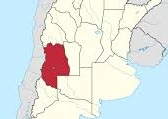
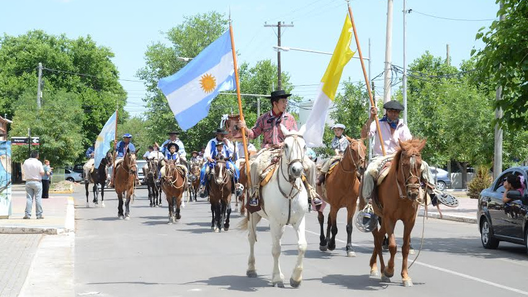

|
El Día de la Tradición se celebra en Argentina el 10 de noviembre, fecha que fue elegida en conmemoración del nacimiento del poeta argentino José Hernández (1834 - 1886), que escribió, entre otros, el poema narrativo El gaucho Martín Fierro, La vuelta de Martín Fierro, relatos en forma de verso de la experiencia de un gaucho, su estilo de vida, sus costumbres, su lengua y códigos de honor. |
| Mendoza | |||
|  | Mendoza es un destino de vinificación mundialmente conocido. Sus suburbios ubican varias grandes bodegas. En la actualidad sus vinos se sirven en la mayoría de los restaurantes de lujo de renombre del mundo. Muchos turistas son atraídos a la ciudad con una oportunidad única de probar vinos asombrosos. El principal evento cultural que se celebra anualmente en Mendoza también está asociado con la elaboración de vinos. Una festividad brillante y llamativa llamada ’Vendimia’ o el Festival Nacional de la Vendimia se dedica a la recolección de la vendimia. El festival se estableció y se celebró por primera vez en 1936. | ||
|  | |||